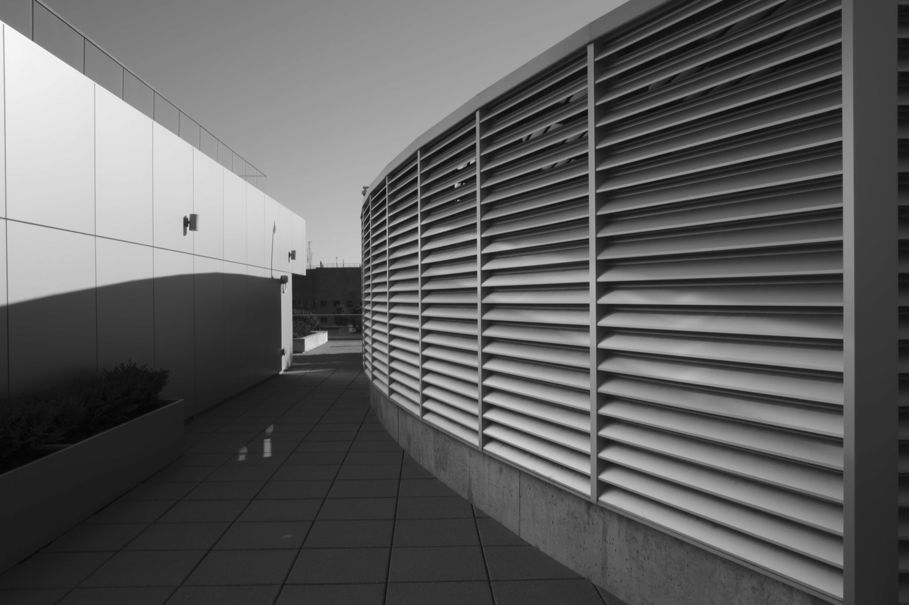

Architectural study
Thresholds
A quiet passage between hard surfaces and shifting light. The frame follows the edge where a building becomes an atmosphere.
Back to camera canvas →
Architectural study
A quiet passage between hard surfaces and shifting light. The frame follows the edge where a building becomes an atmosphere.
Back to camera canvas →